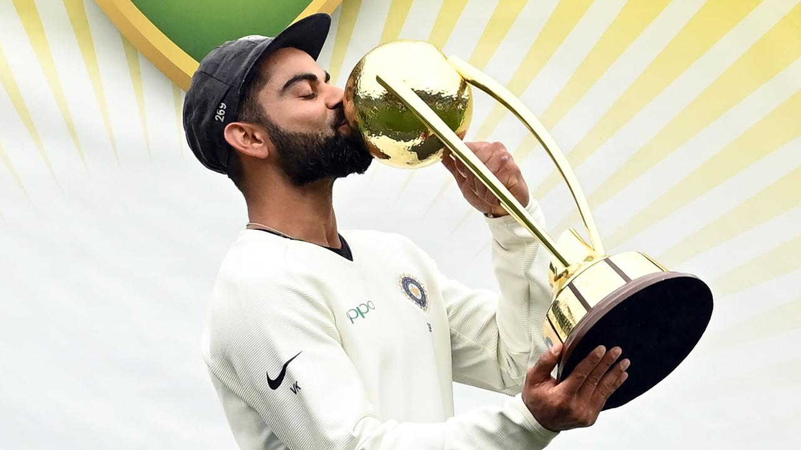
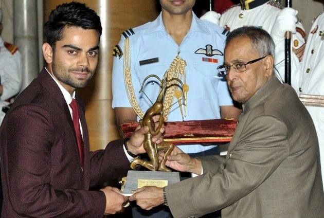
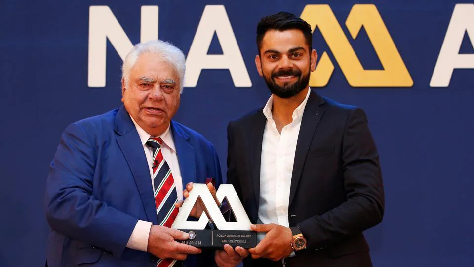

National Honours
- 2013- Arjuna Award
- 2017- Padma Shri, India's 4th highest civilian award
- 2018- Rajiv Gandhi Khel Ratna Award, India's highest sporting honour

Sporting Honours
- Sir Garfield Sobers Trophy (ICC Men's Cricketer of the Decade): 2011-2020
- Sir Garfield Sobers Trophy (ICC Cricketer of the Year): 2017,2018
- ICC ODI Player of the Year: 2012, 2017, 2018
- ICC Test Player of the Year: 2018
- ICC ODI Team of the Year: 2012, 2014, 2016 (captain), 2017 (captain), 2018 (captain), 2019 (captain),
2023
- ICC Test Team of the Year: 2017 (captain), 2018 (captain), 2019 (captain)[424]
- ICC Spirit of Cricket: 2019
- ICC Men's ODI Cricketer of the Decade: 2011-2020
- ICC Men's Test Team of the Decade: 2011-2020 (captain)
- ICC Men's ODI Team of the Decade: 2011-2020
- ICC Men's T20I Team of the Decade: 2011-2020
- Polly Umrigar Award for International Cricketer of the Year: 2011-12, 2014-15, 2015-16, 2016-17,
2017-18
- ICC Men's Player of the Month: October 2022
- Leading Cricketer in the World: 2016, 2017,2018
- CEAT International Cricketer of the Year: 2011-12, 2013-14, 2018-19
- Barmy Army - International Player of Year: 2017, 2018
- ESPNcricinfo - ODI Batting Performance of the Year: 2012
- Wisden Leading Cricketer in the World: 2016, 2017, 2018

Other Honours & Awards
- People's Choice Awards India For Favourite Sportsperson: 2012
- CNN-News18 Indian of the Year: 2017
- GQ Sportsman of the year: 2013
- Delhi & District Cricket Association (DDCA) renamed a stand after Kohli at Arun Jaitley stadium,
Delhi.
- People for the Ethical Treatment of Animals (PETA) India's Person of the Year: 2019